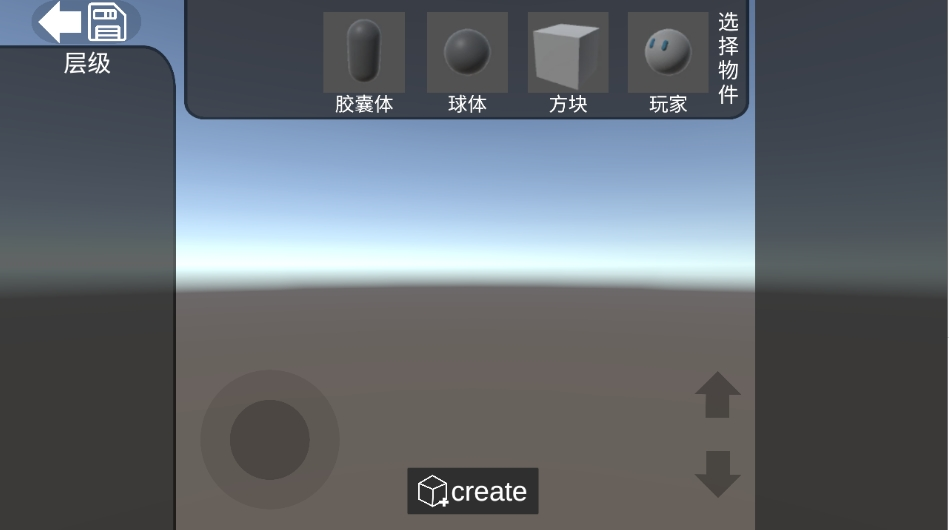
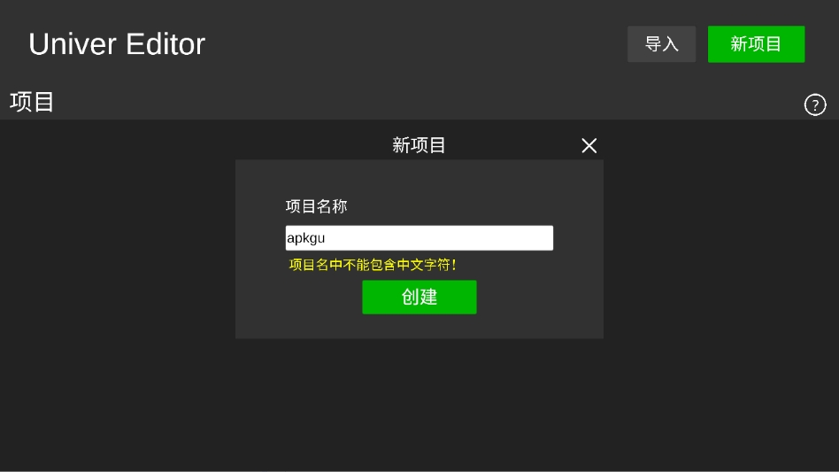

Univer 迭代史：从手机端到简易创作工具的三次转身
从一份 36MB 的手机安装包说起，Univer 用不到两个版本周期完成了从"能跑"到"能用"再到"能做出点东西"的三级跳。我翻了它的中文文档，整理出版本号背后藏着的决策逻辑。
现在这版：2026.1.1r1 的尴尬与亮点
我手里这份Univer文档对应的版本是 2026.1.1r1。这个版本号的命名方式本身就透着一股"还在快速迭代"的意思——三段式加一个修订号，不是那种定版后的正式 release，去它的官网上扫一眼，产品页还很简洁。安装包从下载拿，只有 36MB，2GB 内存就能跑基础编辑，4GB 才能开 3D 模式的流畅体验。
它最大的亮点也是它最矛盾的地方：编辑与试玩共用一块屏幕。虚拟摇杆嵌在视口左下角、升降控件钉在右侧，编辑态用它们走位选点，运行态同一套控件变成操控玩家的工具。这个设计砍掉了"切出去预览"那道工序，代价是屏幕上永远留着两块碍事的控件。

来路：样本文档没提的那些版本
我翻了四篇样本文档，没找到任何更早版本的 changelog 或迁移说明。版本现状那页只写了当前号，FAQ 里提到"工程文件的导入导出标注为后续推出"——连"后续"是哪个版本都没说。
文档导航的层级结构其实已经暴露了它的迭代节奏：
- 核心能力层先落地：四类基本物件（胶囊体、球体、方块、玩家）、3D 视口、虚拟摇杆——这些构成了"能搭东西"的最低门槛，应该是最早一批交付的。
- 物理引擎第二梯队：重力模拟、碰撞与刚体运动。这一层的加入让场景从静态摆设变成了有反馈的小世界，多米诺推倒、球体滚落这些玩法才成立。
- 逻辑与剧情编辑器第三梯队：可视化节点逻辑编辑器、对话剧情编辑器。这是从"搭场景"到"做游戏"的关键一跃，但样本文档里关于这两块的页面内容还很薄，说明功能刚落地不久。
- 项目管理还在路上：保存退出、本地存储是现成的，但导入导出、换机迁移、上架 APK 这些"产出环节"要么标注后续推出，要么只给了口径没落地。
从这条阶梯看，Univer 的团队优先把"创作闭环"做扎实——你能从空白项目一路搭到可运行的小场景。至于"作品怎么搬走、怎么上架"，排在后面。

规律：他们一直在死磕什么
三个版本梯队读下来，有一件事特别明显：他们在死磕"无代码"这件事。
物件是点选即放的，不拖不放不旋转；逻辑是节点编辑器，不写脚本不写事件；对话有专门的剧情编辑器；连保存都是一个软盘图标按钮——整个界面里找不到任何代码框、脚本编辑器或语法提示。
FAQ 里最典型的三个问题："没有建模和编程基础能做出东西吗"、"低配手机能用吗"、"能导入自己的图片音效吗"——全都围绕同一个用户画像：想做点东西但不想学任何技术的普通人。 这个定位在 36MB 安装包、中文界面、手机端运行这三个产品决策里反复出现，不是偶然。
反过来，什么一直没做？项目管理工具链：导入导出、换机迁移、多人协作、云端同步。样本文档里"保存与退出"那一整页只讲了一件事——点左上角软盘图标，本地存好。对于一个想认真做点什么的创作者来说，本地存储的脆弱性是最让人焦虑的事，但这个版本里这件事还没被解决。
预判：照这个路线，下一步大概率走向哪里
这部分是从迭代规律推的，不当官方口径传。
如果团队继续沿着"创作闭环优先"的思路走，下一个版本应该先补项目管理这块短板——导入导出至少要落地一个方向，换机迁移能不能做也要给个准信。FAQ 里已经把这个问题顶到了明面上，用户的焦虑值是明确的。
再往下，逻辑编辑器和对话编辑器的功能密度肯定要加厚。样本文档里这两块的页面数量比物理引擎少，内容也偏概述——说明骨架搭好了，肉还没填。节点类型、条件分支、变量传递，这些是让"小场景"变成"小游戏"的关键。
至于上架 APK 的能力，文档里说"导出支持自定义签名、包名、图标"但"能力落地情况以当前版本为准"——这种口径上的模糊通常意味着功能在内部测试或者刚上线还有硬伤，下一个修订版应该能看到更明确的落地。
写完这篇的时候我又翻了一遍文档目录，版本现状那页孤零零挂着 2026.1.1r1，像是一个还在爬坡的团队留下的脚印。它还没到"功能完备"的阶段，但"能让零基础的人在手机上搭出有物理反馈的 3D 小场景"这件事本身，已经比同类工具走得靠前了一步。整理这些资料的过程中顺手把文档副本同步到了GitHub、Gitee、GitCode三个仓库，国内访问按需选一个就行。